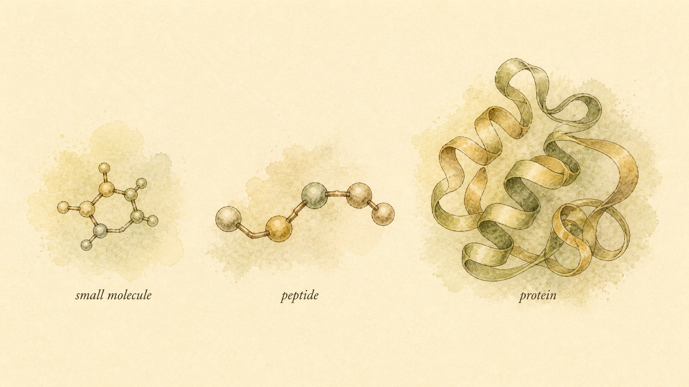

What a Peptide Actually Is
A peptide is not a steroid and it is not a protein, and that single structural fact is why a government-approved medicine, an off-label prescription, and an unlabeled vial from a research-chemical vendor can all share the same three-syllable name.
Open a health forum, a longevity newsletter, or a bodybuilding subreddit today and the word "peptide" shows up attached to an almost absurd range of products. In one thread it names a once-weekly injection a physician might discuss with a learner managing type 2 diabetes or excess body weight. In the next thread it names a small glass vial, sold from a website that also lists laboratory glassware and pipette tips, marketed for "research use only" and mixed at home with bacteriostatic water. In a third it shows up on a skincare label promising to "boost collagen production" in a serum. All three products borrow the same three-syllable word, and almost nobody using that word stops to ask what a peptide structurally is, why it behaves nothing like a steroid or an aspirin tablet once it is inside the body, or why the strength of evidence behind a specific claim, "peptide X helps with Y," can swing from a landmark, thousand-person clinical trial published in a leading medical journal to a single unsupported sentence on a vendor's product page.
That confusion is not an accident of sloppy marketing. It is built into the word itself, because "peptide" is a chemistry term describing a molecular structure, not a regulatory category, a safety rating, or a promise of evidence. A great many entirely different things are, chemically, peptides: a diabetes and weight-management medicine studied in tens of thousands of patients across multiple countries, a hormone your own pituitary gland releases every night while you sleep, and a compound with nothing more than a catalog name and a molecular formula behind it, sold explicitly outside any pharmaceutical regulatory pathway. This nine-chapter course spends the rest of its time on specific peptides, specific mechanisms, and specific claimed uses. None of that will make sense, and none of it can be evaluated honestly, without the foundation this first chapter builds: what a peptide actually is at the molecular level, how it signals differently from the steroid hormones covered in this platform's companion course on anabolic-androgenic steroids, why the category has become such a mess of approved medicine, off-label prescribing, and unregulated grey-market product, and how to place any specific claim about any specific peptide on an evidence ladder that runs from a rigorously controlled human trial at the top down to a stranger's forum post at the bottom.
Our thread through this chapter is a learner named Ingrid, 34, who arrived with a very specific, very common source of confusion. A colleague of hers had recently started a physician-prescribed injectable medication for weight management, and around the same time, a friend in her gym community had started posting enthusiastically online about a different injectable compound, ordered from a website, that she credited with "healing" a shoulder tendon issue in a matter of weeks. Both compounds got described to Ingrid, in conversation, as "peptides," in roughly the same casual, confident tone. It took her some digging to realize these were not two flavors of the same thing. She is not here to be steered toward using, or not using, anything, and this course will not push her, or you, toward a decision either way. She wanted the structural and evidentiary literacy to tell these two situations apart before trusting either description, and that instinct is exactly what this chapter is built to reward.
A short chain of amino acids, and why size runs the whole show
Start with the definition everything else in this course rests on. A peptide is a short chain of amino acids linked together by peptide bonds, the specific chemical bond formed when the carboxyl group of one amino acid (a carbon double-bonded to one oxygen and single-bonded to a hydroxyl group) reacts with the amino group of the next (a nitrogen carrying two hydrogens), releasing a water molecule and leaving the two amino acids joined head to tail. Keep stringing amino acids together this way and you build a backbone, one peptide bond at a time, much like linking beads onto a string, except that each bead, each amino acid, also carries its own distinct side chain hanging off that backbone, and it is the specific sequence of those twenty naturally occurring side chains that gives a given peptide its identity, its shape, and ultimately what it does once it reaches a receptor in the body.
What separates a peptide from its two chemical neighbors, a small molecule on one side and a protein on the other, comes down almost entirely to how many amino acids get strung together, and how the resulting chain behaves as a result. According to Craik et al. (2013), the pharmaceutical field has historically split its catalog of drugs into two very different categories: traditional small molecule drugs, typically under about 500 daltons (a dalton being a unit of molecular mass, roughly the mass of a single hydrogen atom), and much larger biologic drugs, typically over about 5,000 daltons, built from folded proteins that generally cannot survive digestion and must be delivered by injection. A small molecule such as aspirin (about 180 daltons) or the testosterone covered in this platform's steroid-focused course (about 288 daltons) is compact enough to be absorbed through the gut, distributed widely through tissue, and often taken as a simple pill. A large biologic, a folded protein such as growth hormone (roughly 22,000 daltons) or a monoclonal antibody (well over 100,000 daltons), is built from hundreds or thousands of amino acids arranged into complex, folded three-dimensional structures held together by extensive internal bonding, and it is generally too large, too fragile, and too easily destroyed by digestive enzymes to survive being swallowed at all.
A peptide sits in the gap between those two worlds, and Craik and colleagues make exactly this point: for decades, drug development mostly treated that gap as an awkward no-man's-land between two more familiar categories, before increasingly recognizing it as valuable territory in its own right. A working definition used throughout this course places a peptide somewhere between roughly two and fifty amino acids, corresponding to a molecular weight of perhaps two hundred to five thousand daltons, short enough that it does not reliably fold into the complex, stable, self-supporting three-dimensional architecture that defines a true protein, but long enough, and structurally specific enough, that it behaves nothing like a simple small molecule either. According to Fosgerau and Hoffmann (2015), interest in this middle territory has grown substantially in pharmaceutical research precisely because peptides can combine some of the selectivity and potency of a large biologic with some of the manufacturing simplicity of a smaller molecule, and by the time of their review, approximately 140 peptide therapeutics were already in active clinical development, on top of dozens already approved for use.
The boundary lines are not perfectly crisp, and it is worth naming that honestly rather than pretending otherwise. Insulin, at 51 amino acids folded into two linked chains, sits right at the edge, structurally closer to a small folded protein than to the shorter, usually unfolded peptides this course spends most of its time on, which is why insulin is more often classified alongside other small proteins than alongside the peptides covered in the chapters ahead. Semaglutide, the active ingredient behind two of the most discussed weight-management and diabetes medications on the market, is a 31-amino-acid peptide built from the same backbone chemistry as a naturally occurring gut hormone, modified with an attached fatty acid chain that changes how long it persists in the bloodstream without changing its basic classification as a peptide. Oxytocin, the hormone the body releases during childbirth and social bonding, is only nine amino acids long, cyclic rather than a simple straight chain, and one of the shortest, best-studied peptide hormones the human body makes. Across that range, from a nine-residue hormone to a fifty-plus-residue borderline case, the through-line stays the same: amino acids joined by peptide bonds, too small and too structurally simple to be a true folded protein, too large and too structurally specific to behave like a small molecule you could reasonably expect to swallow as a standard pill.

That size and charge problem is not a minor footnote, it is a large part of why almost every peptide medicine discussed in this course, and almost every peptide product sold outside a pharmacy, arrives as an injectable rather than a tablet. A handful of oral peptide formulations exist today, engineered with absorption enhancers and protective coatings to survive the stomach and small intestine long enough to be absorbed in clinically meaningful amounts, but they remain a genuine pharmaceutical achievement rather than the default. For a learner evaluating any peptide product, its claimed method of use, a swallowed capsule, an injected solution, or a nasal spray, is itself a small piece of evidence about how seriously that specific product's formulation was actually engineered, not simply a matter of convenience.
Cell surface, not the nucleus: how a peptide signals
This platform's companion course on anabolic-androgenic steroids (AAS) covers in detail how a steroid hormone like testosterone signals: because it is lipid soluble, it diffuses directly through a cell's outer membrane, binds a receptor sitting inside the cytoplasm, and travels into the nucleus to directly alter which genes get transcribed, a genomic process that unfolds over days to weeks. A peptide cannot use that pathway at all, and the reason is entirely structural, not incidental. Peptides are built from amino acids carrying charged and polar side chains, which makes most peptides hydrophilic, water soluble, and largely unable to slip through the fatty, water-repelling interior of a cell membrane the way a compact steroid can. A peptide arriving at a cell's surface is, chemically, stopped at the door.
Stopped at the door does not mean unable to signal, it means peptides had to evolve, and pharmaceutical chemists had to design, an entirely different way in. The overwhelming majority of peptide hormones and peptide drugs act on receptors sitting on the outer surface of the cell rather than floating inside it. The largest single family of these surface receptors is the G protein-coupled receptor (GPCR) family, a group of proteins that weave back and forth across the cell membrane seven times, presenting a binding pocket on the outside of the cell and a signaling face on the inside. When a peptide binds that outer pocket, the receptor changes shape, and that shape change activates an associated G protein sitting just inside the membrane, which in turn switches on an intracellular relay, frequently a rise in a small signaling molecule called cyclic adenosine monophosphate (cyclic AMP), a shift in intracellular calcium, or a cascade of enzyme-activating kinases. A second, smaller family, receptor tyrosine kinases, works on a related principle: a peptide binds the receptor's outward-facing region, the receptor's inward-facing region gains enzymatic activity, and that activity kicks off its own downstream relay. Either way, the peptide itself never has to enter the cell to produce an effect.
This surface-receptor architecture has a direct, practical consequence that separates peptide signaling from steroid signaling in exactly the way this chapter needs a learner to internalize: speed. A second-messenger cascade triggered at the cell membrane can alter an already-existing enzyme's activity within seconds to minutes, because the proteins doing the work are already present and simply get switched on or off. A steroid's genomic pathway, by contrast, has to alter how often a gene gets copied into messenger RNA and then wait for that transcript to be translated into new protein before a tissue-level effect appears, a process that plays out over days to weeks. This is not a claim that one mechanism is better than the other, it is a claim that they are categorically different tools, built for different jobs, and a learner who understands which tool a given peptide is using can immediately ask sharper questions about how quickly, and through what kind of downstream biology, a specific claimed effect could plausibly occur.
One nuance deserves to be stated honestly rather than flattened for the sake of a clean story. A fast, membrane-triggered cascade does not always mean a fast, visible, whole-body outcome. The glucagon-like peptide-1 (GLP-1) receptor, discussed in far more depth later in this course, is a GPCR, and a molecule that activates it does begin signaling within the cell almost immediately. But the clinically meaningful outcome patients and physicians actually care about, sustained appetite reduction and gradual weight change over months, still requires that fast receptor-level signal to be sustained repeatedly, across a slower background of changing eating behavior and metabolic adaptation, before it adds up to something measurable on a scale. Fast at the receptor and fast at the level of a whole human body observing a result are two different clocks, and this course will be careful, compound by compound, to specify which clock a given claim is actually describing.
It is also worth naming, briefly, that the line between surface signaling and gene-level effects is not absolute in either direction. Many peptide-triggered intracellular cascades eventually reach into the nucleus too, activating transcription factors that alter gene expression as a downstream consequence of that initial membrane-level event. What stays constant, and what genuinely separates a peptide from a steroid at the level of mechanism, is where the signal starts: a peptide's defining, rate-limiting event happens at a receptor sitting on the outside of the cell, while a steroid's defining event happens after the hormone has already crossed the membrane and reached a receptor waiting inside.
One word, three very different worlds
With the chemistry established, turn to why "peptide" as a shopping category has become such a mess. "Peptide" describes molecular architecture, not a regulatory status, and under that single architectural label sit at least three worlds that share almost nothing except the shape of their molecules.
The first world is approved medicine. Insulin analogs, glucagon-like peptide-1 (GLP-1) receptor agonists such as semaglutide and tirzepatide, oxytocin, desmopressin, calcitonin, teriparatide, and several gonadotropin-releasing hormone analogs have each passed through preclinical testing, phase 1 through phase 3 human trials, and formal regulatory review by an agency such as the United States Food and Drug Administration (FDA) before being approved for a specific, labeled use, at a specific studied dose, manufactured under enforced quality and sterility standards. A learner picking up a box of an approved peptide medicine from a pharmacy is holding a product whose content, concentration, and sterility have been independently verified, repeatedly, as a condition of it ever reaching that shelf.
The second world is off-label use of an already-approved compound. Off-label prescribing means a licensed physician prescribes an approved medicine for an indication, population, or dose that was not the one reviewed and approved on its official label, a legal and, it turns out, fairly common clinical practice. According to Radley, Finkelstein, and Stafford (2006), in a nationally representative sample of United States prescribing, roughly 21 percent of prescription mentions were off-label, and roughly 73 percent of those off-label uses had little or no strong scientific support behind them, even though the underlying medicine itself had already been through full regulatory approval for its original, labeled use. The lesson here is not that off-label prescribing is reckless. A clinician may have sound clinical reasoning and real, if incomplete, supporting evidence for a specific off-label decision. The lesson is that "this medicine is FDA-approved" and "this specific use of this medicine is FDA-approved" are two different claims, and the evidence bar for the second one deserves its own scrutiny, independent of how solid the drug's original approval was.
The third world is the grey market, peptides sold online, frequently labeled "not for human consumption" or "for laboratory research use only," a labeling choice that exists specifically to sidestep pharmaceutical regulation rather than to make an honest claim about intended use, since these products are overwhelmingly purchased and used by individual people, not laboratories. There is no enforced sterility standard behind these products, and no independent verification that the vial actually contains what the label says, at the concentration the label says, free of contaminants. According to Tucker et al. (2018), a review of United States Food and Drug Administration warnings covering 776 adulterated dietary supplements identified between 2007 and 2016 found that products marketed for weight loss and muscle building were especially likely to contain hidden, unapproved pharmaceutical ingredients that a consumer had no way of detecting from the label alone. According to Stępień, Kalicka, and Giebułtowicz (2024), independent laboratory testing using liquid chromatography-tandem mass spectrometry (LC-MS/MS) identified undisclosed contaminants in a meaningful share of both legally registered and illegally sold supplement products, a finding that underscores an uncomfortable point: even a product's "legal" status does not, by itself, guarantee that its contents match its label.
The practical upshot is that an identical molecular name, semaglutide, BPC-157, sermorelin, whatever the compound, can describe a product manufactured to pharmaceutical-grade sterility standards and studied in thousands of people, or a product with no verified content, sterility, or human data behind it whatsoever, sold from a website using nearly identical marketing language. The word "peptide" tells a learner the shape of the molecule. It tells them nothing about which of these three worlds a specific product actually comes from, and closing that gap, product by product, claim by claim, is precisely what the rest of this chapter, and the rest of this course, exists to help a learner do.
The evidence ladder
This chapter's real deliverable is a tool, not a fact: a way of asking, for any specific claim about any specific peptide, exactly what kind of evidence actually stands behind that sentence. Call it the evidence ladder, and treat it as the backbone this entire course keeps returning to. According to Murad et al. (2016), the traditional way of visualizing this idea, a pyramid with weaker evidence at a wide base and stronger evidence at a narrow peak, has been an influential teaching tool in medicine for good reason, even as researchers continue to refine exactly how the layers should be organized. For the purposes of evaluating a single peptide claim, a simplified four-rung version of that structure does the job well.
At the top rung sits the human randomized controlled trial (RCT), or a systematic review pooling several of them. In a randomized controlled trial, participants are randomly assigned to receive either the compound being tested or a comparison, often a placebo, the assignment is concealed from participants and frequently from investigators as well (a design feature called blinding), and the outcome is measured in a prespecified, objective way. Randomization is what allows a researcher to reasonably attribute an observed difference between groups to the compound itself, rather than to some other, unmeasured difference between the people who happened to end up in each group.
The next rung down holds smaller human studies: open-label trials without a control group, small pilot studies, dose-finding studies, and case series. These generate genuine human data, and they are frequently an essential, legitimate step on the way toward a larger controlled trial. But without a large enough sample, or a comparison group, or blinding, they are far more vulnerable to placebo effect, natural fluctuation in symptoms, and simple chance than a well-designed randomized trial is, and a single small study should be weighted accordingly.
Below that sits animal and preclinical evidence: rodent studies, primate studies, and cell-culture experiments conducted outside a living organism entirely. This is frequently where a compound's mechanism gets first characterized, and this tier is genuinely indispensable for hypothesis generation and early safety screening before anyone attempts a human trial. But a result in a mouse, or in a dish of isolated cells, is not a result in a human, for reasons of species-specific metabolism, receptor distribution, and whole-body physiology, a theme this platform's steroid-focused course develops at length around a classic mid-twentieth-century rodent bioassay that still gets misread as human data seventy years later.
At the bottom rung sits anecdote and vendor marketing: individual self-reports, forum testimonials, before-and-after photos, and a manufacturer's or vendor's product-page claims. None of this carries any built-in control for placebo effect, expectation, concurrent lifestyle change, or selective reporting, people who had a disappointing experience post about it far less often than people who had a good one, and a vendor's financial incentive to describe its own product favorably is about as large a conflict of interest as exists anywhere in this subject. None of this means a personal account is automatically false. It means a personal account, by itself, sits at the bottom of the ladder, not the top, no matter how sincerely and specifically it is told.
None of the lower rungs are worthless. A rodent study is real evidence, and a forum thread full of consistent, independently reported experiences is worth noticing, even if it cannot be trusted the way a randomized trial can. The actual skill this chapter is teaching is calibration: matching the confidence a learner extends to a claim with the rung of evidence that claim actually rests on, rather than treating every sentence that sounds scientific as though it occupied the top of the ladder by default.
Placing a peptide claim on the ladder, honestly
The honest headline of this entire course, and the reason this chapter exists to set it up before anything else, is that most of the individual peptides discussed in later chapters, especially the ones most heavily marketed inside bodybuilding and general wellness circles, sit on the bottom two rungs of this ladder. A small number sit much higher. Knowing which is which, compound by compound, claim by claim, is most of what separates an educated reader of this subject from an easily persuaded one.
Consider the top of the ladder first. According to Wilding et al. (2021), a 68-week, multicenter, double-blind trial randomly assigned 1,961 adults with overweight or obesity, in a two-to-one ratio, to receive either once-weekly semaglutide at 2.4 milligrams or a placebo, alongside a lifestyle intervention, with body weight change as a coprimary outcome. Body weight fell by 14.9 percent in the semaglutide group compared with 2.4 percent in the placebo group, a result published in the New England Journal of Medicine, one of medicine's most rigorously reviewed journals, and confirmed across several related trials in the same research program. That is about as high on the evidence ladder as a peptide medicine gets: large, randomized, blinded, placebo-controlled, multicenter, with results that replicate. This course covers the glucagon-like peptide-1 (GLP-1) and related incretin peptides in depth in a later chapter, and this trial is a large part of why that chapter reads very differently from most of the chapters that come before it.
Now consider the opposite end. Peptides marketed heavily in bodybuilding and wellness spaces for muscle building, fat loss, tissue repair, or anti-aging frequently rest on a foundation of a single rodent study, an in-vitro mechanism paper, and a large accumulated body of user anecdote that gets presented, in tone and formatting, as though it carried the weight of clinical consensus. This course will name that gap plainly, compound by compound, in every chapter that follows, not to dismiss the underlying mechanism, a mechanism can be entirely real and still sit low on the evidence ladder, but to keep a learner from mistaking "there is some evidence" for "there is strong evidence." Those are different sentences, and only one of them is usually true for the peptides that dominate fitness marketing.
This gap exists for structural, not conspiratorial, reasons. Developing a compound through the full regulatory approval pathway, preclinical safety work followed by phase 1 through phase 3 human trials, costs an enormous amount of money and time, and according to Fosgerau and Hoffmann (2015), even the roughly 140 peptide therapeutics that were in active clinical development at the time of their review represent a substantial, sustained pharmaceutical research investment. Companies generally only make that investment when a compound is patentable and can reasonably earn back its cost through a controlled, exclusive market. A compound sold outside that pathway, as an unregulated "research chemical," has often never had anyone with the financial incentive, or the legal standing, to fund that level of human testing at all, regardless of how promising its underlying mechanism looks in a petri dish or a mouse. Low evidence, in other words, is frequently a statement about who could afford to run the trial, not a statement about whether the underlying biology is interesting or real.
Every chapter that follows in this course will state a given peptide's plainly claimed use, its receptor-level mechanism, and its evidence grade side by side, deliberately, so that a learner can hold all three at once rather than being handed an interesting mechanism and letting it stand in, emotionally, for evidence it does not actually represent. A compelling story about a receptor is not the same thing as a randomized trial, and this course will keep the two visibly separate every single time.
Case study: Ingrid and the one word covering three different products
Running Ingrid's situation back through this chapter separates cleanly into the three confusions most learners carry into this subject, and it is worth resolving each one explicitly, because the pattern of correction, not any single fact, is the actual skill this chapter teaches. Her first assumption was that because both products were called "peptides," they sat in roughly the same category of tested, regulated medicine. The section on one word, three worlds replaces that with the accurate picture: her colleague's medication had passed through full preclinical development, multiple phases of human trials, and formal government regulatory review before ever reaching a pharmacy shelf, manufactured under enforced sterility and quality standards, at a dose and for an indication a regulatory agency had specifically reviewed. Her friend's compound, by contrast, had been purchased from a vendor explicitly labeling it "not for human consumption," a labeling choice that exists to sidestep that entire regulatory pathway rather than to make an honest statement of intended use, with no independent verification of what the vial actually contained.
Her second assumption was that being able to purchase a compound online, without a prescription, functioned as a kind of informal seal of approval, if it were genuinely unsafe, she reasoned, it surely would not be so easy to buy. The evidence behind Tucker et al. (2018) and Stępień, Kalicka, and Giebułtowicz (2024) replaces that assumption with a considerably less comfortable fact: products sold outside the pharmaceutical regulatory pathway, and particularly those marketed for the fitness, weight-management, and recovery claims her friend's product made, have repeatedly been found, on independent laboratory analysis, to contain undeclared, unapproved pharmaceutical ingredients, contaminants, or simply the wrong compound at the wrong concentration. Ease of purchase measures a website's willingness to sell, not a regulator's assessment of safety or a laboratory's confirmation of content.
Her third assumption, and probably the one doing the most emotional work, was that her friend's specific, detailed, sincerely told story, an actual shoulder, an actual timeline, an actual person she knew and trusted, carried something close to the weight of a clinical finding. The evidence ladder built in the previous two sections replaces that assumption without dismissing her friend's honesty at all: a single individual's account, however detailed and sincere, sits at the bottom rung, with no control for the placebo effect, no control for whatever else changed in that person's training, rest, or unrelated healing during the same weeks, and no way to separate what the compound did from what the body would likely have done on its own. That does not mean her friend was lying, or that nothing happened. It means one story is not evidence at the strength her friend's confident tone implied.
What Ingrid actually left this chapter with was not a verdict on either product, a recommendation for or against either one, or a diagnosis of her friend's tendon. She left with three sharper questions to ask before trusting the next claim she encounters in this space: what, structurally, is this compound, a peptide, a small molecule, or a protein, and what does that predict about how it has to be delivered and how quickly it can plausibly act. Which of the three worlds does this specific product come from, an approved medicine, an off-label use of one, or an unregulated grey-market compound. And where, specifically, does the evidence behind this specific claim sit on the ladder, a randomized trial, a small uncontrolled study, an animal experiment, or a story. Those three questions do not resolve every peptide debate this course will eventually walk through. They give her, and every learner working through this chapter, the tools to ask a sharper question about each one as the chapters ahead get more specific, which is exactly the job of a foundation chapter.
Where this course stops: understanding is not permission
Before this chapter closes, state the frame governing the entire course explicitly, the same way this platform's steroid-focused course does, because it shapes what these nine chapters are for and, just as importantly, what they are not for. This is education and harm reduction. Each remaining chapter explains a peptide's or peptide family's chemistry, its receptor-level mechanism, its plainly stated intended or claimed use, and its honest evidence grade, descriptively. Nothing in this course, including today's foundation, provides dosing guidance, cycle or protocol designs, or sourcing information, and nothing here should be read as a green light to use anything.
That boundary follows directly from the chemistry and the evidence framework covered today, it is not a separate rule bolted onto them afterward. A peptide's structure, its receptor mechanism, and the strength of evidence behind a given claim are all true independent of whether any specific reader ever acts on that information. Understanding them has value on its own, whether the person doing the learning is a learner like Ingrid making sense of two very different friends' very different situations, someone weighing a decision for themselves, or simply someone who wants to read a vendor's product page or a forum thread with real literacy behind the evaluation. Regulatory status varies by jurisdiction and by specific compound, and this course does not offer legal advice of any kind.
Decisions about whether to use any medication, prescribed or otherwise, and the medical monitoring of anyone already doing so, belong with a licensed physician who can evaluate an individual's actual health history, order and interpret relevant testing, and weigh a specific risk against a specific benefit for that one person. That is true regardless of how thoroughly a learner understands the mechanism and evidence framework described in this chapter. A chain of amino acids does not know, and cannot tell a person, what is safe for their specific body, their specific medical history, or their specific goals, and no chapter in this course will pretend otherwise.
This is close to the exact discipline Ingrid needed most, more than any single fact about a specific trial's numbers or a specific vendor's labeling practices. Her actual situation, making sense of a colleague's prescribed treatment and a friend's self-sourced compound, does not call for a diagnosis or a recommendation from this course, and it would not have called for one even if she had asked for it directly. What this chapter can responsibly give her, and every learner working through it, is the structural and evidentiary literacy to recognize an overconfident claim, to ask a more precise question of a source, and to know exactly where her own understanding needs to hand off to a qualified clinician rather than to another forum post or vendor page. That handoff point is not a limitation of what she learned today. It is the most professional thing carried out of this chapter, and the rest of this course will keep returning to it, compound by compound, as the specifics get more detailed and the stakes of getting the framing wrong get higher.
Key Takeaways
- A peptide is a short chain of amino acids (roughly 2 to 50) joined by peptide bonds, structurally distinct from a small molecule drug (generally under about 500 daltons) and from a larger, folded protein (generally thousands of amino acids arranged into complex three-dimensional structure).
- Because most peptides are water soluble and carry charge along their backbone, they generally cannot diffuse through a cell membrane the way a lipid-soluble steroid can. Instead they bind receptors on the outside of the cell, most often G protein-coupled receptors (GPCRs), triggering fast intracellular signaling cascades rather than the slow, gene-transcription-based mechanism steroid hormones use.
- "Peptide" is a chemistry term, not a regulatory category. It covers Food and Drug Administration-approved medicines developed through full clinical trial and review pathways, off-label use of already-approved compounds (common, but variably supported by evidence), and unregulated grey-market "research chemicals" of unverified content and purity.
- The evidence ladder ranks confidence in a claim: human randomized controlled trials (RCTs) at the top, smaller or uncontrolled human studies next, animal and preclinical studies below that, and individual anecdote or vendor marketing at the bottom, carrying essentially no built-in control for placebo effect or confounding.
- Most peptides marketed heavily in bodybuilding and wellness spaces sit low on that ladder, often supported only by animal data, mechanism papers, and accumulated anecdote. A small number, including the glucagon-like peptide-1 (GLP-1) receptor agonists covered later in this course, sit at the very top, backed by large, randomized, placebo-controlled human trials.
- This course is education and harm reduction, not a protocol source. Understanding a peptide's chemistry, mechanism, and evidence grade is valuable on its own and does not replace the judgment of a licensed clinician for any individual health decision.
With the chemistry, the signaling logic, and the evidence ladder in place, the next two chapters put this framework to immediate use on one of the most discussed peptide families in the fitness and longevity space: growth hormone secretagogues. Chapter 2 covers growth hormone-releasing hormone (GHRH) analogs such as sermorelin, CJC-1295, and tesamorelin, and how they act on a specific receptor to shape the body's own pulsatile growth hormone release, graded honestly against the evidence ladder built here today.
References
Craik, D. J., Fairlie, D. P., Liras, S., & Price, D. (2013). The future of peptide-based drugs. Chemical Biology & Drug Design, 81(1), 136-147. https://doi.org/10.1111/cbdd.12055
Fosgerau, K., & Hoffmann, T. (2015). Peptide therapeutics: Current status and future directions. Drug Discovery Today, 20(1), 122-128. https://doi.org/10.1016/j.drudis.2014.10.003
Murad, M. H., Asi, N., Alsawas, M., & Alahdab, F. (2016). New evidence pyramid. Evidence-Based Medicine, 21(4), 125-127. https://doi.org/10.1136/ebmed-2016-110401
Radley, D. C., Finkelstein, S. N., & Stafford, R. S. (2006). Off-label prescribing among office-based physicians. Archives of Internal Medicine, 166(9), 1021-1026. https://doi.org/10.1001/archinte.166.9.1021
Stępień, K. A., Kalicka, A., & Giebułtowicz, J. (2024). Screening the quality of legal and illegal dietary supplements by LC-MS/MS. Food Additives & Contaminants: Part B, 17(4), 328-341. https://doi.org/10.1080/19393210.2024.2382221
Tucker, J., Fischer, T., Upjohn, L., Mazzera, D., & Kumar, M. (2018). Unapproved pharmaceutical ingredients included in dietary supplements associated with US Food and Drug Administration warnings. JAMA Network Open, 1(6), e183337. https://doi.org/10.1001/jamanetworkopen.2018.3337
Wilding, J. P. H., Batterham, R. L., Calanna, S., Davies, M., Van Gaal, L. F., Lingvay, I., McGowan, B. M., Rosenstock, J., Tran, M. T. D., Wadden, T. A., Wharton, S., Yokote, K., Zeuthen, N., & Kushner, R. F. (2021). Once-weekly semaglutide in adults with overweight or obesity. New England Journal of Medicine, 384(11), 989-1002. https://doi.org/10.1056/NEJMoa2032183